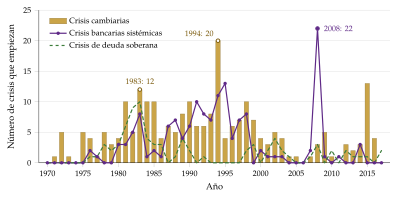
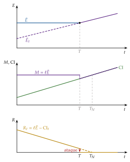
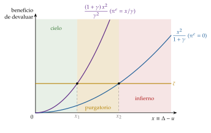
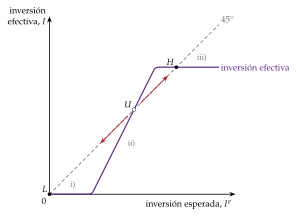
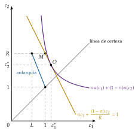

Tema 3.B.17
Teorías explicativas de las crisis de balanza de pagos.
Crisis cambiarias de 1.ª, 2.ª y 3.ª generación (Krugman, Flood-Garber, Obstfeld), crisis gemelas, paradas súbitas, contagio y alertas tempranas.
Exclusivo Material exclusivo de victorgutierrezmarcos.es y la app Oposición TCEE · DCE. Puedes usarlo libremente para tu estudio personal. No se autoriza su incorporación a otras plataformas, aplicaciones o servicios. Condiciones de uso.
Introducción
Enganche:
«Nadie escarmienta en cabeza ajena», dice el refrán.
Reinhart y Rogoff (2009) reconstruyen 8 siglos de crisis financieras en 66 países y encuentran siempre el mismo síntoma: antes de cada crisis, gobiernos, banqueros e inversores se convencen de que esta vez es distinto, de que las crisis son cosa de otros países y de otras épocas.
En menos de una década, México (1994), Asia (1997), Rusia (1998), Brasil (1999), Turquía (2001) y Argentina (2001-2002) pasaron en semanas de recibir capital a perderlo (Laeven y Valencia, 2020). Cada crisis sorprendió a quien la sufría y, casi siempre, a los modelos que explicaban la anterior.
La pregunta que recorre la exposición es: ¿por qué un país que parecía sano pasa en pocos días de financiarse sin problemas a no poder pagar al exterior, y por qué casi nunca aprende de lo que les pasó a sus vecinos?
Relevancia:
Son frecuentes: entre 1970 y 2017 empezaron en el mundo 151 crisis bancarias sistémicas y 236 crisis cambiarias, y muchas llegaron juntas (Laeven y Valencia, 2020). Las cambiarias se multiplicaron con la libertad de capitales: 25 en los años 70, 74 en los 80 y 84 en los 90, con un máximo de 20 en 1994 (gráfico 1).
Son caras: en 1998 el PIB real cayó un 13,1 % en Indonesia, un 7,6 % en Tailandia, un 7,4 % en Malasia y un 4,9 % en Corea; en 1995, un 5,9 % en México, y en 2002, un 10,9 % en Argentina (Fondo Monetario Internacional, 2026; Banco Mundial, 2026).
Para España: la peseta se devaluó varias veces en 1992 y 1993, en la crisis del Sistema Monetario Europeo (Eichengreen y Wyplosz, 1993) [ver tema 3.B.16], y en 2010-2012 la periferia del euro sufrió una parada súbita de la financiación privada que cubrió el Eurosistema [ver tema 3.B.11] [ver tema 3.B.12].
Para la política económica: entender por qué estallan es la base para prevenirlas (reservas, régimen cambiario, regulación financiera, red de seguridad del FMI) [ver tema 3.B.15] [ver tema 3.B.22] [ver tema 3.B.27].

Fuente: elaboración propia a partir de Laeven y Valencia (2020). Número de crisis que empiezan cada año. Una crisis cambiaria es una depreciación frente al dólar de al menos el 30 % que supera en 10 puntos la del año anterior. La actualización de 2026 amplía solo las crisis bancarias, hasta 2025 (Laeven y Valencia, 2026).
Contextualización:
Las definiciones de partida:
hay una crisis de balanza de pagos cuando un país deja de poder financiar su déficit exterior o atender su deuda exterior a los precios vigentes (tipo de cambio y tipos de interés) y se ve obligado a un ajuste brusco: pierde reservas, devalúa o deja flotar la moneda, deja de pagar o recorta de golpe el gasto [ver tema 3.B.11] [ver tema 3.B.12];
toma 4 formas, que a menudo se solapan:
la crisis cambiaria: la demanda de la moneda nacional cae tanto que el banco central pierde gran parte de sus reservas y acaba devaluando o dejando flotar (o sube mucho los tipos de interés para evitarlo);
la crisis bancaria: por el pasivo, una retirada masiva de depósitos por dudas sobre la solvencia; por el activo, un deterioro del valor de los préstamos y de sus garantías [ver tema 3.B.26];
la crisis de deuda externa: el país (el Estado o el sector privado) no puede atender el servicio de su deuda con el exterior [ver tema 3.B.29];
la parada súbita: la entrada de capital se corta de golpe o se invierte, aunque no haya problemas de deuda, y la cuenta corriente tiene que mejorar de golpe en lo mismo que deja de entrar (G. A. Calvo, 1998);
cuando una crisis bancaria y una cambiaria se alimentan entre sí se habla de crisis gemelas (G. L. Kaminsky y Reinhart, 1999);
un ataque especulativo es la venta masiva de moneda nacional al banco central a cambio de sus reservas, con la que los inversores se adelantan a una devaluación;
el tipo de cambio sombra, \(\tilde E\), es el que vaciaría el mercado de divisas si el banco central dejara de intervenir; el fijo es \(\bar E\) [ver tema 3.B.14];
hay contagio cuando la crisis de un país aumenta, por sí misma, la probabilidad de crisis en otro (Eichengreen, Rose y Wyplosz, 1996);
como un ataque puede rechazarse con reservas o con tipos de interés sin llegar a devaluar, la presión sobre la moneda se mide con un índice de presión cambiaria: una media ponderada de la depreciación, la pérdida de reservas y la subida del tipo de interés frente al exterior (Eichengreen, Rose y Wyplosz, 1995).
La convención: el tipo de cambio \(E\) es directo (unidades de moneda nacional por unidad de moneda extranjera), de modo que una subida es una depreciación (con tipo fijo, una devaluación); el tipo de cambio real es \(q\equiv E\,P^*/P\) [ver tema 3.B.13].
La historia: las crisis no son nuevas. Con datos desde los impagos de Inglaterra del siglo XIV, Reinhart y Rogoff (2009) muestran que se agrupan en oleadas, más frecuentes cuando el capital se mueve con libertad. Desde los 70 se suceden:
el fin de Bretton Woods (1971-1973) [ver tema 3.B.20];
la crisis de la deuda latinoamericana (1982), el Sistema Monetario Europeo (1992-1993), México (1994), Asia (1997), Rusia (1998) y Argentina (2001-2002) [ver tema 3.B.21];
la crisis financiera global (2007-2008) y la de la zona del euro (2010-2012) [ver tema 3.B.26] [ver tema 3.B.16].
Las generaciones de modelos: Eichengreen, Rose y Wyplosz (1995) bautizaron los modelos como de primera y segunda generación, y la etiqueta se ha quedado, porque cada oleada de crisis ha traído un modelo nuevo que la explica a posteriori (Krugman, 2001):
la primera (Krugman, 1979; Flood y Garber, 1984): una política interna incompatible con el tipo fijo agota las reservas; la crisis es inevitable y predecible;
la segunda (Obstfeld, 1994, 1996): el gobierno sopesa los costes y los beneficios de mantener la paridad y las expectativas pueden cumplirse solas; la crisis es evitable, pero impredecible;
la tercera (Krugman, 1999; Chang y Velasco, 2001): la fragilidad financiera, los rescates implícitos y la deuda en divisas unen la crisis bancaria y la cambiaria;
a ellas se suman el estudio del contagio, el de los indicadores de alerta temprana y la pregunta por una cuarta generación, tras las crisis de 2007-2008 y del euro.
Problemática:
¿Por qué estallan las crisis de balanza de pagos: por malas políticas, por expectativas o por la fragilidad del sistema financiero?
¿Son inevitables? ¿Se pueden predecir?
¿Por qué se contagian a países que no parecen tener nada que ver?
¿Qué política las previene y cuál las resuelve?
Estructura:
La exposición sigue la historia de la teoría: cada generación de modelos nace de una crisis que la anterior no explicaba.
I. Crisis cambiarias: primera y segunda generación (I): las crisis de un tipo de cambio fijo, primero por políticas incompatibles con la paridad y después por expectativas que se cumplen solas;
II. Tercera generación: crisis gemelas (II): la crisis nace en los balances de bancos y empresas, y la cambiaria y la financiera se refuerzan; con ellas, las paradas súbitas y el pecado original;
III. Contagio, predicción y ¿cuarta generación? (III): por qué se propagan, si se pueden anticipar y qué enseñaron 2008 y el euro.
3.B.17. Teorías explicativas de las crisis de balanza de pagos
Introducción2′30″
I. Crisis cambiarias: primera y segunda generación11′
1. Primera generación: crisis por los fundamentos
2. Segunda generación: crisis autocumplidas
II. Tercera generación: crisis gemelas9′
1. Idea
2. Modelos
3. Evidencia empírica
4. Valoración
III. Contagio, predicción y ¿cuarta generación?6′30″
1. Idea
2. Contagio basado en los fundamentos
3. Contagio puro
4. Capacidad de predicción: los sistemas de alerta temprana
5. ¿Hacia una cuarta generación?
Conclusión1′
Reparto del cante: introducción, 2′30″; I, 11′ (I.1, 5′; I.2, 6′); II, 9′ (II.1, 1′30″; II.2, 5′30″; II.3, 1′; II.4, 1′); III, 6′30″ (III.1, 0′30″; III.2 a III.5, 1′30″ cada uno), y conclusión, 1′. Cada generación nace de una crisis que la anterior no explicaba: Bretton Woods y América Latina, el Sistema Monetario Europeo, Asia y, después, 2008 y el euro. Los 3 gráficos imprescindibles son el del momento del ataque (Flood y Garber), el de las 3 regiones (Obstfeld) y el de los 3 equilibrios de la inversión (Krugman, 1999), cada uno con su función clave: el momento del ataque, la cláusula de escape y la condición de colapso. Conviene decir al empezar la convención del tipo de cambio (directo: si sube, se deprecia la moneda). Las pegatinas: «tanto va el cántaro a la fuente que al final se rompe» (primera generación), «la fe mueve montañas» (segunda), «no hay dos sin tres» (crisis gemelas, que a menudo son triples) y «no es la velocidad lo que mata, es la parada súbita» (paradas súbitas); el refrán del enganche vuelve en la idea final. Las derivaciones están en el anexo A.
I. Crisis cambiarias: primera y segunda generación
Empezamos por las crisis más sencillas, las de un tipo de cambio fijo que cae bajo un ataque especulativo, que son las que primero estudió la teoría.
Conclusión anticipada: un tipo fijo cae cuando la política interna lo hace inviable, y entonces la crisis es inevitable y se ve venir (primera generación), o cuando el mercado cree que el gobierno no querrá seguir pagando lo que cuesta defenderlo, y entonces la crisis puede cumplir su propia profecía (segunda generación).
I.1. Primera generación: crisis por los fundamentos (Krugman, 1979; Flood y Garber, 1984)
a) Idea
El origen del modelo: Krugman (1979) traslada a las divisas el modelo de Salant y Henderson (1978) sobre los ataques a las existencias públicas de oro: si el gobierno fija un precio que no podrá defender, los especuladores le compran todas las existencias de golpe antes de que se agoten. Flood y Garber (1984) lo hacen lineal y calculan el momento exacto del ataque.
Las crisis que explica:
los ataques que acabaron con Bretton Woods en 1971 y con los acuerdos del Smithsonian en 1973, que fueron, según el propio Krugman, los que motivaron el modelo (Krugman, 2001) [ver tema 3.B.20];
las devaluaciones de América Latina en los 70 y principios de los 80, en países que monetizaban grandes déficits públicos con el tipo de cambio fijo frente al dólar: México en 1976, tras 22 años a 12,50 pesos por dólar, y en 1982; Argentina en 1981 (Blanco y Garber, 1986; Cumby y Wijnbergen, 1989) [ver tema 3.B.21];
con la subida de tipos de la Reserva Federal de Paul Volcker (1979-1982), la crisis cambiaria se juntó con la de la deuda externa de 1982 [ver tema 3.B.29].
La intuición, en 3 pasos:
Una política incompatible con la paridad: el tipo de cambio es fijo, pero la política monetaria tiene otro objetivo prioritario, financiar el déficit público.
Las reservas se agotan: el dinero que se crea para el Estado no lo quiere el público, que lo cambia por divisas en el banco central; las reservas caen y el tipo de cambio sombra, \(\tilde E\), se deprecia.
El ataque, predecible e inevitable: los inversores saben que la paridad caerá y la atacan antes de que se agoten las reservas, en cuanto \(\tilde E\) alcanza a \(\bar E\).
Pegatina: «tanto va el cántaro a la fuente que al final se rompe»: cada día se pierden reservas, y el día del ataque se sabe de antemano.
b) Modelo
i) Supuestos
Economía pequeña y abierta, con tipo de cambio fijo \(\bar E\) y libre movilidad del capital; el banco central defiende la paridad solo con sus reservas (sin controles de capital).
PPA, con el nivel de precios exterior normalizado a 1: \(P_t=E_t\) [ver tema 3.B.14].
PNCI con previsión perfecta: \(i_t=i^*+\dot E_t/E_t\) [ver tema 3.B.13].
Demanda de dinero con la producción constante: \(M_t/P_t=kY-h\,i_t\) [ver tema 3.A.35].
Balance del banco central, con el multiplicador del dinero igual a 1 [ver tema 3.A.36]: \[\tag{1} M^S_t=\mathrm{CI}_t+R_t ,\] con CI el crédito interno y \(R\) las reservas: es el enfoque monetario de la balanza de pagos [ver tema 3.B.12].
El déficit público se monetiza: el crédito interno crece a un ritmo constante, \(\dot{\mathrm{CI}}_t=\mu>0\) (\(\mu\) es aquí un aumento por unidad de tiempo, no un margen).
Previsión perfecta: los inversores conocen el modelo y la política.
ii) Desarrollo
El mercado de dinero: juntando los supuestos 2 a 4, con \(\ell\equiv kY-h\,i^*>0\) (letra local), \[\tag{2} M^S_t=\ell\,E_t-h\,\dot E_t .\]
Mientras dura la paridad (\(E_t=\bar E\), \(\dot E_t=0\)), la cantidad de dinero que el público quiere es fija, \(\ell\bar E\). Como el crédito interno crece, las reservas caen al ritmo \(\mu\):
\(R_t=\ell\bar E-\mathrm{CI}_t\): el público cambia por divisas el dinero que le sobra y el banco central se las vende para defender la paridad. No es una decisión de esterilizar: con tipo fijo, la pérdida de reservas es automática, \(\Delta R=-\Delta\mathrm{CI}\);
sin ataque, las reservas se agotarían en \(T_N=R_0/\mu\).
El tipo de cambio sombra: es el que habría si el banco central, ya sin reservas, dejara flotar la moneda. Entonces \(M^S_t=\mathrm{CI}_t\), el tipo se deprecia al ritmo \(\dot E_t=\mu/\ell\) y, de (2), \[\tag{3} \tilde E_t=\frac{\mathrm{CI}_t}{\ell}+\frac{h\,\mu}{\ell^{2}} ,\] que crece con el crédito interno: los fundamentos se deterioran día a día.
El momento del ataque: mientras \(\tilde E_t<\bar E\), atacar da pérdidas; si se esperara a que \(\tilde E_t>\bar E\), quien atacara un instante antes se llevaría un beneficio. La competencia entre especuladores lleva el ataque al momento \(T\) en que \(\tilde E_T=\bar E\):1
\[T=\frac{R_0}{\mu}-\frac{h}{\ell}<T_N\tag{4}\]
(derivación en el anexo A).
En \(T\), los inversores compran de golpe las reservas que quedan, \(h\mu/\ell\). La cantidad de dinero cae en esa cuantía: desde \(T\) se espera depreciación, sube el tipo de interés y baja la demanda de dinero. Después, el tipo de cambio flota y se deprecia al ritmo \(\mu/\ell\) (gráfico 2).

Fuente: elaboración propia a partir de Krugman (1979) y Flood y Garber (1984). Arriba, el tipo sombra \(\tilde E_t\) alcanza la paridad en \(T\) y desde entonces es el tipo de mercado; en medio, la cantidad de dinero cae en \(T\) y luego crece con el crédito interno; abajo, el ataque se lleva las reservas que quedan antes de \(T_N\).
El ataque llega antes:
cuantas menos reservas hay al principio (\(R_0\));
cuanto más deprisa crece el crédito interno (\(\mu\));
cuanto más apreciada está la paridad, dado el crédito interno (\(\bar E\) más bajo: \(\tilde E\) la alcanza antes);
cuanto más sensible al tipo de interés es la demanda de dinero (\(h\)): sin esa sensibilidad (\(h=0\)), el ataque coincidiría con el agotamiento de las reservas.
iii) Implicaciones
La causa es la política: la crisis nace de la incoherencia entre una política monetaria al servicio del déficit y el tipo fijo; las expectativas solo adelantan el desenlace.
Predecible e inevitable: con esa política, la crisis llega con certeza y se sabe cuándo; solo la evita cambiar de política.
Fijar el tipo de cambio no basta para disciplinar: es la versión abierta de la dominación fiscal de Sargent y Wallace (1981): si la política fiscal no se ajusta, la monetaria acaba cediendo [ver tema 3.A.39].
La salida es renunciar a uno de los 3 vértices de la trinidad imposible: dejar flotar, controlar los movimientos de capital o subordinar la política monetaria a la paridad (y la fiscal con ella) (Obstfeld, Shambaugh y Taylor, 2005) [ver tema 3.B.15] [ver tema 3.A.32].
c) Extensiones
Incertidumbre: si el crédito interno crece con perturbaciones aleatorias, el momento del ataque deja de ser seguro y la probabilidad de devaluación sube poco a poco; los tipos de interés la recogen antes de la crisis (el «problema del peso») (Flood y Garber, 1984) [ver tema 3.B.13].
Esterilización: en la práctica, los bancos centrales esterilizan el efecto del ataque sobre la base monetaria. En el modelo monetario eso deja el tipo fijo sin defensa posible, y Flood, Garber y Kramer (1996) pasan a un modelo de equilibrio de cartera para estudiar los ataques esterilizados, como el que hundió el peso mexicano en diciembre de 1994.
d) Evidencia empírica
México, 1973-1982: monetizaba el déficit con el peso fijo frente al dólar, y la probabilidad de devaluación que se deduce del crédito interno subía antes de las devaluaciones de 1976 y 1982 (Blanco y Garber, 1986).
Argentina, 1979-1981: el crédito interno era incompatible con la tablita cambiaria y la crisis se vio venir en los tipos de interés (Cumby y Wijnbergen, 1989).
Bretton Woods: la caída del pool del oro en 1968 y la de la convertibilidad del dólar en 1971 se pueden leer como ataques de primera generación (Garber, 1993) [ver tema 3.B.20].
e) Valoración
Empírica: explica bien las crisis con déficits monetizados, pero en los 90 sus fundamentos predecían mal el momento del ataque.
Teórica:
exige información perfecta y simétrica;
trata de forma asimétrica a los agentes: los inversores calculan el tipo sombra y el gobierno sigue su regla de forma mecánica hasta perder las reservas, sin subir los tipos, ajustar el déficit, devaluar antes o pedir prestado fuera;
por construcción, la crisis no tiene efectos reales: explica cuándo cae el tipo fijo, no la recesión que vino después en América Latina.
En septiembre de 1992 cayeron monedas del Sistema Monetario Europeo sin déficits monetizados ni reservas agotadas: hacía falta otra explicación (I.2).
I.2. Segunda generación: crisis autocumplidas (Obstfeld, 1994, 1996)
a) Idea
La crisis que la motivó: tras la reunificación alemana de 1990, el Bundesbank subió los tipos de interés para frenar la inflación, y los demás países del mecanismo de cambios del Sistema Monetario Europeo tuvieron que seguirle con sus economías camino de la recesión (Eichengreen y Wyplosz, 1993) [ver tema 3.B.43].
Tras el «no» danés al Tratado de Maastricht (junio de 1992), los mercados dudaron de que los gobiernos aguantaran esos tipos, y en septiembre atacaron la libra, la lira y la peseta.
3 explicaciones (Eichengreen y Wyplosz, 1993):
la armonización insuficiente de las políticas pasadas: la pérdida de competitividad acumulada, una lectura de primera generación;
la de las políticas futuras: el temor a que los gobiernos relajaran la política al llegar a la unión, que se cumple solo;
la perturbación asimétrica de la reunificación.
Lo nuevo: el Reino Unido no monetizaba déficits ni había agotado sus reservas. La paridad cayó porque defenderla, con un paro creciente, costaba más de lo que el gobierno estaba dispuesto a pagar, y porque el mercado lo sabía.
3 elementos:
credibilidad: la crisis es una pérdida de credibilidad de la paridad, no un agotamiento de reservas;
un gobierno que optimiza: compara en cada periodo los costes y los beneficios de mantener la paridad (podría defenderla indefinidamente con tipos, controles o crédito exterior);
equilibrios múltiples: las expectativas cambian esos costes y pueden cumplirse solas.
Pegatina: «la fe mueve montañas»: si el mercado cree que la paridad caerá, cae.
b) Modelo
Es el modelo de la cláusula de escape de la sección 3 de Obstfeld (1996), que lleva a la economía abierta el de Barro y Gordon (1983) (Obstfeld, 1994); la presentación determinista sigue la síntesis de Jeanne (2000).2
i) Supuestos
El gobierno optimiza: elige si mantiene la paridad o devalúa minimizando una pérdida con 2 costes y, si abandona la paridad, un coste fijo \(\bar c>0\) (reputación, conflicto con los socios, incertidumbre): \[\tag{5} L=\bigl(Y^{\mathrm{obj}}-Y\bigr)^2+\gamma\,\pi^2\;\bigl(+\,\bar c\ \text{si devalúa}\bigr),\qquad \gamma>0 ,\] con \(Y^{\mathrm{obj}}\) la producción que quiere el gobierno y \(\gamma\) el peso de la inflación.
Oferta de Lucas con pendiente normalizada a 1 y una perturbación de oferta \(u\): \(Y=Y^n+(\pi-\pi^e)+u\) [ver tema 3.A.6].
El gobierno quiere más producción que la natural: \(\Delta\equiv Y^{\mathrm{obj}}-Y^n>0\), como en el sesgo inflacionista de Barro y Gordon [ver tema 3.A.36].
PPA relativa con inflación exterior nula: la tasa de devaluación es igual a la inflación, \(\Delta E/E=\pi\); mantener la paridad es \(\pi=0\) y devaluar es elegir \(\pi>0\) [ver tema 3.B.14].
Orden de las jugadas: el público fija \(\pi^e\) (salarios, tipos de interés), se conoce \(u\) y el gobierno decide.
ii) Desarrollo
Con \(x\equiv\Delta-u\) (el fundamento: cuanto mayor, peor) y \(X\equiv x+\pi^e\), la brecha que tiene que cerrar el gobierno es \(Y^{\mathrm{obj}}-Y=X-\pi\), y la pérdida con tipo fijo y la mínima con devaluación son \[\tag{6} L^{\mathrm{fijo}}=X^2,\qquad \pi^{\mathrm{flex}}=\frac{X}{1+\gamma},\qquad L^{\mathrm{flex}}=\frac{\gamma}{1+\gamma}\,X^2+\bar c .\]
El gobierno abandona la paridad si
\[L^{\mathrm{fijo}}-L^{\mathrm{flex}}=\frac{(x+\pi^e)^2}{1+\gamma}>\bar c\tag{7}\]
Es la cláusula de escape: las expectativas de devaluación suben el beneficio de devaluar, así que la crisis puede cumplir su propia profecía (derivación en el anexo A).
Con expectativas racionales, o el público espera la paridad (\(\pi^e=0\)) o espera la devaluación (\(\pi^e=\pi^{\mathrm{flex}}\), que da \(\pi^e=x/\gamma\)), y salen 3 regiones del fundamento (gráfico 3):
el cielo, \(x<x_1\equiv\gamma\sqrt{\bar c/(1+\gamma)}\): la paridad aguanta aunque se espere la devaluación;
el purgatorio, \(x_1\le x\le x_2\): hay equilibrios múltiples, y la paridad cae si y solo si se espera que caiga;
el infierno, \(x>x_2\equiv\sqrt{(1+\gamma)\,\bar c}\): la paridad cae aunque nadie lo espere.
En el equilibrio con devaluación, la inflación es \(\pi=x/\gamma\): el mismo sesgo inflacionista que la discreción de Barro y Gordon con una perturbación de oferta [ver tema 3.A.36]. La paridad era un compromiso para no caer en él; la cláusula de escape dice cuándo el compromiso deja de ser creíble.

iii) Implicaciones
Los fundamentos importan, pero no deciden solos: empeoran la paridad más paro o una meta de producción más ambiciosa (\(\uparrow\Delta\)), una perturbación de oferta adversa (\(\downarrow u\)), menos aversión a la inflación (\(\downarrow\gamma\)) y un coste de salida menor (\(\downarrow\bar c\)). Llevan la economía del cielo al purgatorio y de este al infierno.
Evitables e impredecibles: en el purgatorio, el deterioro de los fundamentos no es condición necesaria para la crisis; basta un cambio de las expectativas, que puede no tener causa (una «mancha solar»).
Defender la paridad cuesta más cuanto más se espera la devaluación: con movilidad del capital, el tipo de interés tiene que compensar la depreciación esperada y la prima de riesgo, \(i-i^{*}\approx\gamma E^e+\rho\) (\(\gamma E^e\) es la depreciación esperada, no el peso \(\gamma\) de la pérdida) [ver tema 3.B.13], y unos tipos altos agravan el paro, la deuda y la banca. El 16 de septiembre de 1992 el Riksbank sueco subió su tipo marginal al 500 % y aun así dejó flotar la corona el 19 de noviembre (Sveriges Riksbank, 2026).
Es la inconsistencia temporal aplicada a la paridad: el tipo fijo es una regla para evitar el sesgo inflacionista de la discreción; si el mercado duda de que el gobierno la mantenga, la regla deja de ser creíble (Kydland y Prescott, 1977; Barro y Gordon, 1983) [ver tema 3.A.36].
Política:
fundamentos sólidos (paro bajo, deuda y banca sanas) y reservas abundantes, que alejan del purgatorio [ver tema 3.B.22];
atarse las manos: subir \(\bar c\) con un compromiso más duro, una caja de conversión o una unión monetaria (Giavazzi y Pagano, 1988) [ver tema 3.B.15] [ver tema 3.B.16];
o no prometer lo que no se puede cumplir: dejar flotar.
La devaluación no tiene por qué ser una catástrofe: tras salir del mecanismo de cambios, el Reino Unido pudo bajar los tipos de interés, sin la recesión profunda que acompaña a las crisis de tercera generación.
c) Extensiones
El ataque como juego de coordinación (Obstfeld, 1996, § 2): 2 especuladores con 6 unidades de moneda nacional cada uno, un coste de 1 por vender y un banco central que, si se queda sin reservas, devalúa un 50 % (tabla 1).
Con reservas altas (20), ni los 2 juntos pueden romper la paridad: nadie ataca.
Con reservas bajas (6), cualquiera la rompe solo: atacar es estrategia dominante.
Con reservas intermedias (10), hacen falta los 2: hay 2 equilibrios de Nash, no atacar y atacar los 2, y el resultado depende de lo que cada uno crea que hará el otro [ver tema 3.A.14].
Son el cielo, el infierno y el purgatorio de la cláusula de escape en pequeño.
| Reservas altas (20) | ||
| N | V | |
| N | \((0,0)\) | \((0,-1)\) |
| V | \((-1,0)\) | \((-1,-1)\) |
| Reservas bajas (6) | ||
| N | V | |
| N | \((0,0)\) | \((0,2)\) |
| V | \((2,0)\) | \((\tfrac12,\tfrac12)\) |
| Reservas intermedias (10) | ||
| N | V | |
| N | \((0,0)\) | \((0,-1)\) |
| V | \((-1,0)\) | \((\tfrac32,\tfrac32)\) |
Fuente: Obstfeld (1996, § 2). Fila: especulador 1; columna: especulador 2; N: no vende; V: vende. Cada especulador tiene 6 unidades de moneda nacional; vender cuesta 1; si la paridad cae, la moneda se devalúa un 50 %. Sombreados, los equilibrios de Nash.
Juegos globales: si cada especulador observa el fundamento con un pequeño error, la multiplicidad desaparece y hay un umbral único del fundamento a partir del cual todos atacan (Morris y Shin, 1998).
Antes de 1992: Obstfeld (1986) ya había mostrado que, si se espera que el gobierno relaje la política tras un ataque, el ataque puede justificarse solo.
La misma lógica en la deuda pública: si los inversores temen un impago, exigen más interés y el impago se vuelve más probable (G. A. Calvo, 1988); es la fragilidad de los Estados del euro [ver tema 3.B.16] [ver tema 3.A.39].
d) Evidencia empírica
El Sistema Monetario Europeo, 1992-1993: el 16 de septiembre de 1992, tras intervenciones masivas, el Reino Unido suspendió la participación de la libra en el mecanismo de cambios del Sistema Monetario Europeo (Bank of England, 1992); Italia suspendió la de la lira y la peseta se devaluó varias veces entre 1992 y 1993 (Eichengreen y Wyplosz, 1993) [ver tema 3.B.16] [ver tema 3.B.43].
Los fondos que habían apostado contra la libra, con el de George Soros a la cabeza, ganaron con la devaluación.
Expectativas que se cumplen solas: en 1992-1993 cayeron monedas con fundamentos muy distintos; con datos del franco francés, Jeanne (1997) encuentra que las expectativas autocumplidas explican una parte significativa de la presión.
México, 1994: se lee hoy como una crisis mixta, con fundamentos frágiles y un pánico de los acreedores de la deuda a corto plazo en dólares; es el puente entre la segunda generación y las paradas súbitas (II.2.3).
e) Valoración
Predice poco: con equilibrios múltiples, dice cuándo un país es vulnerable, no cuándo cae; y la elección entre equilibrios queda fuera del modelo (salvo con los juegos globales).
La pérdida es ad hoc, como en Barro y Gordon [ver tema 3.A.36], y las expectativas se toman como dadas: el modelo no dice cómo se forman.
Olvida los balances: no hay bancos ni deuda en divisas, y la devaluación no es contractiva.
No explica la crisis asiática de 1997, con fundamentos sólidos, grandes efectos reales y una crisis bancaria a la vez (II.1).
Recapitulando: las 2 primeras generaciones explican la caída de un tipo fijo, por los fundamentos o por las expectativas, pero dejan fuera los bancos y los balances, que es por donde estallaron las crisis de los 90 en Asia (II).
II. Tercera generación: crisis gemelas
Una vez vistas las crisis de un tipo fijo, pasamos a las que nacen en los balances de bancos y empresas, que son las que estallaron en Asia en 1997.
Conclusión anticipada: la crisis empieza en los balances y en la banca, no en la política monetaria; la crisis bancaria y la cambiaria se alimentan una a otra, y por eso los efectos reales son mucho mayores que en las 2 primeras generaciones.
II.1. Idea
La crisis que la motivó: el 2 de julio de 1997 Tailandia dejó flotar el bat, y en pocos meses cayeron Filipinas, Malasia, Indonesia y Corea del Sur (Fondo Monetario Internacional, 1997) [ver tema 3.B.21].
Las 2 generaciones anteriores no la explicaban, por 4 rasgos:
los fundamentos eran buenos: superávit público, inflación baja y ahorro alto;
los efectos reales fueron enormes: en 1998 el PIB de Indonesia cayó un 13,1 % (Fondo Monetario Internacional, 2026);
no fue una decisión del gobierno de abandonar la paridad, sino una huida del capital;
fue a la vez una crisis bancaria y una cambiaria: una crisis gemela.
La intuición, en 3 pasos:
Debilidades ocultas: bajo los buenos fundamentos hay una supervisión financiera débil y garantías implícitas (los rescates y el propio tipo fijo).
Una apertura financiera rápida: con la liberalización de la cuenta financiera entra mucho capital a corto plazo, en divisas y volátil, que los bancos prestan en moneda nacional y a largo plazo [ver tema 3.A.22] [ver tema 3.B.18].
La retroalimentación: cuando el capital sale, la depreciación hunde los balances, los balances hundidos aceleran la salida y la crisis bancaria y la cambiaria se alimentan.
3 nexos entre la crisis bancaria y la cambiaria: la causalidad no va en un solo sentido, y cada modelo de esta generación subraya uno de los nexos:
la crisis bancaria lleva a la cambiaria: el rescate de los bancos con dinero del banco central agota las reservas (II.2.1);
la crisis cambiaria agrava la bancaria: la depreciación encarece la deuda en divisas y hunde los balances (II.2.2);
las 2 tienen una causa común: la parada súbita de la financiación exterior (II.2.3).
Pegatina: «no hay dos sin tres»: la crisis bancaria y la cambiaria llegan juntas, y a menudo se les suma una tercera, la de la deuda.
II.2. Modelos
La tercera generación es una familia de modelos, no un modelo: los 3 que siguen no se excluyen, y combinados explican las crisis gemelas.
II.2.1. Riesgo moral y fragilidad financiera: la crisis bancaria lleva a la cambiaria
a) Idea
Si los bancos esperan que el Estado o el FMI los rescaten, se quedan con las ganancias y socializan las pérdidas: piden prestado en exceso, en divisas y a corto plazo, y prestan a proyectos arriesgados (McKinnon y Pill, 1998; Krugman, 1998).
El tipo fijo es otro seguro implícito: si el gobierno garantiza la paridad, nadie cubre el riesgo cambiario. En pocas palabras, el tipo fijo es también una fuente de riesgo moral.
b) Modelo
i) Supuestos
Garantías implícitas: el gobierno (o los organismos internacionales) rescatará a los bancos en dificultades, como hace con los depositantes la garantía de depósitos [ver tema 3.B.27].
Un tipo de cambio fijo que los agentes dan por seguro.
Una regulación y una supervisión financieras débiles, que no frenan la toma de riesgos.
ii) Desarrollo
La fragilidad: como no soportan todo el riesgo, los bancos se endeudan en divisas y a corto plazo y no cubren su exposición; el crédito crece deprisa y la calidad de los préstamos empeora.
Los rescates esperados son deuda pública oculta: cuando se revelan las pérdidas, el mercado anticipa que el rescate se pagará con emisión de dinero o con déficits futuros, y ataca la moneda.
El banco central, como prestamista de última instancia, crea dinero para los bancos; el crédito interno crece y las reservas caen.
Es la lógica de la primera generación con un déficit que aún no se ve (Corsetti, Pesenti y Roubini, 1999; Burnside, Eichenbaum y Rebelo, 2001).
La iliquidez internacional: aunque los bancos sean solventes, si sus pasivos a corto plazo en divisas superan los activos líquidos del país, un pánico de los acreedores puede hundirlos y, con ellos, la paridad (Chang y Velasco, 2001).3
Es el pánico bancario de Diamond y Dybvig (1983) en economía abierta: con transformación de plazos hay un equilibrio bueno y uno de pánico, en el que cada depositante retira porque cree que los demás lo harán, aunque el banco sea sano [ver tema 3.B.26] [ver tema 3.A.10].4
Con deuda en divisas, el banco central no puede ser prestamista de última instancia en una moneda que no emite, y el pánico bancario se convierte en un ataque contra la moneda.
iii) Implicaciones
Regular y supervisar antes de abrir la cuenta financiera [ver tema 3.B.27], y acumular reservas frente a la deuda exterior a corto plazo [ver tema 3.B.22].
Más flexibilidad cambiaria: frena las entradas a corto plazo y hace que bancos y empresas vean el riesgo y se cubran.
En el extremo contrario, la dolarización: quita al banco central la capacidad de rescatar y, con ella, la expectativa de rescate [ver tema 3.B.15].
II.2.2. Hojas de balance (Krugman, 1999): las 2 crisis se retroalimentan
a) Idea
Krugman (1999) une los problemas de balance de las empresas con la salida de capital para explicar Asia: si las empresas tienen deuda en divisas, una depreciación reduce su riqueza neta, o la elimina, y con ella su capacidad de endeudarse e invertir (Krugman, 2001).
La crisis cambiaria y la financiera se refuerzan, y la economía puede caer en un equilibrio malo sin que la inversión de antes fuera mala.
b) Modelo
i) Supuestos
Producción Cobb-Douglas, \(Y=K^{\alpha}L^{1-\alpha}\): el capital se lleva \(\alpha Y\) y el trabajo \((1-\alpha)Y\).
2 tipos de residentes: los trabajadores, sin acceso al crédito, consumen su renta, \(C=(1-\alpha)Y\); los empresarios ahorran e invierten la suya.
Deuda en 2 monedas: la riqueza neta de los empresarios es \[\tag{8} W=\alpha Y-B-q\,B^{*},\] con \(B\) la deuda en moneda nacional, \(B^{*}\) la deuda en divisas y \(q\) el tipo de cambio real (si sube, hay depreciación real) [ver tema 3.B.13].
Restricción de crédito: los prestamistas dan como mucho \(\theta\) veces la riqueza, así que la inversión no puede superar la inversión financiable, \(I\le I_F\equiv(1+\theta)\,W\) (\(\theta\) es aquí el apalancamiento, no la aversión al riesgo).
Equilibrio del bien nacional: una fracción \(m\) del consumo y de la inversión va a importaciones, y las exportaciones \(X\) (dadas, medidas en bien extranjero; no son las exportaciones netas) completan la demanda,5 \[\tag{9} Y=(1-m)\,\bigl[(1-\alpha)Y+I\bigr]+q\,X\quad\Longrightarrow\quad q=\frac{\bigl[1-(1-m)(1-\alpha)\bigr]Y-(1-m)\,I}{X}.\]
ii) Desarrollo
La espiral, con la producción dada a corto plazo:
una pérdida repentina de confianza saca el capital y baja la inversión (\(\downarrow I\));
menos inversión deprecia el tipo de cambio real, por (9) (\(\uparrow q\));
la depreciación encarece la deuda en divisas y la riqueza cae, por (8) (\(\downarrow W\));
con menos riqueza cae el crédito (\(\downarrow I_F\)), lo que agrava la crisis bancaria y vuelve a bajar la inversión.
La espiral se dispara si el crédito cae más que la inversión que la provocó:
\[\frac{\partial I_F}{\partial I}=\frac{(1+\theta)(1-m)\,B^{*}}{X}>1\tag{10}\]
Si la derivada es menor que 1, cada vuelta es más pequeña y no hay crisis; si es mayor, la senda es explosiva. Es más fácil que se dispare:
cuanto mayor es el apalancamiento, \(\theta\);6
cuanto mayor es la deuda en divisas frente a las exportaciones, \(B^{*}/X\);
cuanto menor es la propensión a importar, \(m\): con una economía poco abierta, la caída de la inversión recae sobre el bien nacional y hace falta más depreciación.
De dónde sale la condición.
Sustituyendo \(q\) de (9) en la riqueza (8), el crédito disponible es \[I_F=(1+\theta)\Big[\alpha Y-B-\frac{\bigl[1-(1-m)(1-\alpha)\bigr]Y-(1-m)\,I}{X}\,B^{*}\Big].\]
Con \(Y\) dado a corto plazo, por la regla de la cadena, \[\frac{\partial I_F}{\partial I}=\frac{\partial I_F}{\partial W}\,\frac{\partial W}{\partial q}\,\frac{\partial q}{\partial I}=(1+\theta)\,(-B^{*})\Big(-\frac{1-m}{X}\Big)=\frac{(1+\theta)(1-m)\,B^{*}}{X}.\]
Si es mayor que 1, una caída de la inversión reduce el crédito en más de lo que cayó, y la espiral se acelera. ∎
3 equilibrios (gráfico 4): con la inversión esperada, \(I^e\), en abscisas y la efectiva, \(I\), en ordenadas, la inversión esperada determina el tipo real, los balances y el crédito, y con ellos la inversión efectiva. La curva tiene 3 tramos:
con inversión esperada baja, los empresarios quiebran y nadie les presta, porque no tienen garantías: la inversión es nula;
en el tramo intermedio, la inversión está limitada por el crédito, y la curva es más inclinada que la recta de 45° si se cumple (10);
con inversión esperada alta, la restricción de crédito no aprieta y la inversión la fija su rentabilidad (se invierte hasta igualar el rendimiento de la inversión nacional y el de la extranjera).
Los equilibrios están donde la curva corta a la recta de 45°, porque ahí la inversión efectiva es la esperada:
\(H\) (inversión alta) y \(L\) (inversión nula) son estables;
\(U\), el intermedio, es inestable: si la inversión esperada queda un poco por debajo, la economía cae hasta \(L\); si queda un poco por encima, sube hasta \(H\).
Estable cerca, frágil lejos: desde \(H\), una caída de la confianza que lleve la inversión esperada por debajo de \(U\) hunde la economía en \(L\). Es un equilibrio de expectativas autocumplidas, y la culpa no es de la inversión de antes, sino de la fragilidad de los balances.

iii) Implicaciones
Origen financiero, efectos reales: la crisis empieza en los balances y llega a la producción a través de la inversión, y las crisis gemelas son más hondas que las cambiarias o las bancarias por separado.
Menos predecibles: dependen de cambios bruscos de las expectativas, no de unos fundamentos que se deterioran a la vista.
La receta del FMI de subir los tipos para frenar la salida de capital cierra un canal de la crisis (la depreciación) y abre otro (menos inversión, menos producción y menos riqueza) (Krugman, 1999); también la critican Furman y Stiglitz (1998) [ver tema 3.B.22].
Alternativas: grandes líneas de crédito de emergencia y, en el momento del pánico, controles temporales a la salida de capital, que además frenan el contagio a otros países [ver tema 3.B.22].
Prevención, sobre cada término de (10):
menos apalancamiento (\(\downarrow\theta\)) y menos deuda en divisas (\(\downarrow B^{*}\)), con supervisión financiera y una apertura de la cuenta financiera ordenada y por etapas;7
más apertura comercial (\(\uparrow m\), \(\uparrow X\));
credibilidad de la política económica, para que no se dispare la fuga de capitales (\(\downarrow I\)).
Para paliar la crisis: los paquetes de apoyo multilateral evitan ajustes internos socialmente insoportables.
II.2.3. Paradas súbitas y pecado original
a) Idea
Una parada súbita es un corte brusco de las entradas de capital, o su inversión, aunque no haya problemas de deuda (G. A. Calvo, 1998) [ver tema 3.B.11] [ver tema 3.B.12].
Pegatina: «no es la velocidad lo que mata, es la parada súbita», decían los banqueros (Dornbusch, Goldfajn y Valdés, 1995): el peligro no es endeudarse deprisa, sino que la financiación se corte de golpe.
b) Modelo
i) Supuestos
Un déficit por cuenta corriente financiado con entradas de capital, sin reservas ni crédito oficial que lo cubran si se cortan.
Bienes comerciables y no comerciables: el ajuste exterior exige cambiar su precio relativo, el tipo de cambio real [ver tema 3.B.13].
Deuda en divisas: es el pecado original, la incapacidad de un país de endeudarse en el exterior en su propia moneda (Eichengreen y Hausmann, 1999); aunque bancos y empresas quieran, no pueden cubrir el descalce de monedas [ver tema 3.B.11].
ii) Desarrollo
El ajuste forzoso: si la entrada de capital se corta, la cuenta corriente tiene que mejorar de golpe en lo mismo que deja de entrar. Cae el gasto, y con él la demanda de no comerciables, cuyo precio relativo tiene que bajar: una depreciación real y una recesión profundas (G. A. Calvo, 1998).
Cuanto más cerrada es la economía, menor es la producción de comerciables con la que ajustar y mayor la depreciación real necesaria.
El pecado original convierte la depreciación en crisis de balance: con deuda en divisas, la depreciación real destruye los balances, como en Krugman (1999). La parada súbita es el detonante y las hojas de balance, el amplificador: las paradas súbitas son más probables y más dañinas en economías cerradas con deuda en dólares (G. A. Calvo, Izquierdo y Mejía, 2004).
iii) Implicaciones
El miedo a flotar: muchos emergentes que dicen flotar intervienen para evitar la depreciación, porque sus balances no la resisten (G. A. Calvo y Reinhart, 2002) [ver tema 3.B.15].
El autoseguro: acumular reservas frente a la deuda exterior a corto plazo y endeudarse en moneda propia en cuanto se pueda [ver tema 3.B.22].
No es culpa solo del país: para Eichengreen, Hausmann y Panizza (2005), el pecado original apenas depende de la calidad de las políticas del país y sí de su tamaño y de la estructura del sistema financiero internacional.
3 conceptos que no conviene confundir (Eichengreen, Hausmann y Panizza, 2003):
el pecado original: el país no puede endeudarse fuera en su propia moneda, sea cual sea su política;
la intolerancia a la deuda, que lleva a la crisis a países con niveles de deuda que otros soportan, por su historia de impagos (Reinhart, Rogoff y Savastano, 2003);
el descalce de monedas, que es la diferencia entre la moneda de los activos y la de los pasivos de cada agente.
c) Evidencia empírica
México, 1994-1995, fue una crisis mixta:
fundamentos frágiles: déficit corriente alto, apreciación real y un auge del crédito tras privatizar la banca;
un banco central que en 1994 compensó con crédito interno la pérdida de reservas, como en la primera generación con esterilización (Flood, Garber y Kramer, 1996);
y una parada súbita: cuando la deuda pública a corto plazo indexada al dólar (los tesobonos) superó a las reservas, los inversores dejaron de renovarla y llegó un pánico que se cumplió solo (Sachs, Tornell y Velasco, 1996; Cole y Kehoe, 1996; G. A. Calvo y Mendoza, 1996).
La devaluación de diciembre de 1994 abrió a la vez una crisis cambiaria y una bancaria, y el PIB cayó un 5,9 % en 1995 (Fondo Monetario Internacional, 2026) [ver tema 3.B.12] [ver tema 3.B.21].
II.3. Evidencia empírica
Tailandia: tuvo un déficit corriente de en torno al 8 % del PIB en 1995 y 1996, financiado con capital a corto plazo; el 2 de julio de 1997 dejó flotar el bat, y la rupia indonesia flotó el 14 de agosto (Fondo Monetario Internacional, 1997) [ver tema 3.B.21].
Entradas masivas con sistemas financieros débiles: la apertura financiera sin supervisión aumentó la vulnerabilidad de toda la región [ver tema 3.A.22].
Crisis gemelas: en 76 crisis cambiarias y 26 bancarias entre 1970 y 1995, los problemas bancarios suelen preceder a la crisis cambiaria, y esta agrava la bancaria (G. L. Kaminsky y Reinhart, 1999).
Efectos reales: en 1998 el PIB cayó un 13,1 % en Indonesia, un 7,6 % en Tailandia, un 7,4 % en Malasia y un 4,9 % en Corea (Fondo Monetario Internacional, 2026; Banco Mundial, 2026).
¿Fundamentos o pánico?:
Las crisis siguen:
en 2018 la lira turca perdió un 28 % frente al dólar, con inflación alta, déficit corriente y mucha deuda empresarial en divisas: rasgos de la tercera generación (Banco Central Europeo, 2026b; Bank for International Settlements, 2026);
en 2018 el peso argentino perdió la mitad de su valor frente al dólar y el FMI concedió a Argentina el mayor préstamo de su historia, unos 56.300 millones de dólares (Fondo Monetario Internacional, 2018); en diciembre de 2023 el tipo oficial pasó de 366,5 a 800 pesos por dólar (Bank for International Settlements, 2026), y en abril de 2025 el país firmó un nuevo programa de 20.000 millones (Fondo Monetario Internacional, 2025).
II.4. Valoración
Una familia, no un modelo: cada modelo subraya un nexo entre la crisis bancaria y la cambiaria, y juntos explican Asia, Rusia o Argentina.
Vuelven los equilibrios múltiples: la fragilidad dice dónde se puede caer, no cuándo.
Variantes: en Aghion, Bacchetta y Banerjee (2001), con crédito restringido, subir los tipos para defender la moneda puede hundir la inversión más que la propia depreciación; es el acelerador financiero en economía abierta [ver tema 3.A.42].
Recapitulando: las 3 generaciones explican por qué cae un país (tabla 2); queda por explicar por qué caen varios a la vez y si se puede ver venir (III).
| Primera | Segunda | Tercera | |
|---|---|---|---|
| Modelo | Krugman (1979); Flood y Garber (1984) | Obstfeld (1994, 1996) | Krugman (1999); Chang y Velasco (2001) |
| Origen | política monetaria al servicio del déficit | coste de mantener la paridad y expectativas | balances de bancos y empresas |
| Gobierno | pasivo | optimiza | rescata (riesgo moral) |
| Fundamentos | malos y empeorando | intermedios | buenos en apariencia |
| ¿Predecible? | sí, e inevitable | no, y evitable | no |
| Efectos reales | no | pequeños | grandes (crisis gemela) |
| Ejemplo | América Latina, años 70 y 80 | Sistema Monetario Europeo, 1992-1993 | Asia, 1997-1998 |
Fuente: elaboración propia.
III. Contagio, predicción y ¿cuarta generación?
Las crisis no se quedan en casa y no avisan: una vez visto por qué cae un país, pasamos a ver cómo la crisis pasa a otros, si se puede anticipar y qué han añadido las crisis de 2008 y del euro.
Conclusión anticipada: la crisis se contagia por el comercio, por los acreedores comunes y por las expectativas; los indicadores dicen qué países son vulnerables, pero no cuándo caerán, y las crisis recientes son crisis de balance sin tipo fijo que defender.
III.1. Idea
Las crisis de los 90 saltaron de un país a otro: de Tailandia a Malasia, Indonesia, Filipinas y Corea del Sur en 1997, y de Rusia a Brasil, sin apenas lazos entre ellos, en 1998-1999 (Laeven y Valencia, 2020).
Hay contagio si la crisis de un país aumenta, por sí misma, la probabilidad de crisis en otro.8 No lo es la coincidencia por un choque común, como una subida de tipos en Estados Unidos que golpea a todos los emergentes a la vez (los «efectos monzón») (Masson, 1998).
G. L. Kaminsky y Reinhart (2000), a partir de S. Calvo y Reinhart (1996), distinguen 2 tipos:
III.2. Contagio basado en los fundamentos
a) Vínculos comerciales
i) Bilaterales
La devaluación de un país reduce la demanda de las exportaciones de sus socios y les quita competitividad-precio, y puede forzarles a devaluar.
Ejemplos:
en la crisis del Sistema Monetario Europeo, la devaluación de la libra esterlina precipitó la de la libra irlandesa, y los ataques a la peseta y sus devaluaciones de 1992 y 1993 arrastraron al escudo portugués, por los estrechos lazos comerciales (Eichengreen y Wyplosz, 1993) [ver tema 3.B.16];
Argentina dejó de pagar su deuda en diciembre de 2001 y abandonó la convertibilidad en enero de 2002 (Oficina de Evaluación Independiente del FMI, 2004); su PIB cayó un 10,9 % en 2002, y la crisis pasó a sus socios del Mercosur (Fondo Monetario Internacional, 2026).
ii) Por la competencia en un tercer mercado
Si 2 países compiten en un tercero, la devaluación de uno quita competitividad al otro, que puede verse empujado a devaluar también.
Ejemplos: en la crisis de la deuda latinoamericana de los 80, por la competencia en el mercado de Estados Unidos, y en la crisis asiática de 1997, por la competencia en Japón, Hong Kong o Singapur [ver tema 3.B.21].
b) Vínculos financieros
i) Bilaterales
Se dan cuando hay inversiones cruzadas entre los países: las pérdidas o la huida de capital en uno se trasladan al otro.
Uruguay, 2002: los argentinos tenían muchos depósitos en dólares en los bancos uruguayos y los retiraron cuando Argentina congeló los suyos; la crisis bancaria y la de deuda pública llegaron a la vez, el país perdió el grado de inversión y su PIB cayó un 7,7 % (Plaza y Sirtaine, 2005; Fondo Monetario Internacional, 2026).9
ii) El prestamista común
Bancos, fondos de inversión y de pensiones y hedge funds diversifican sus carteras entre países. Si sufren pérdidas en uno, cortan la financiación o salen de los países que les parecen parecidos, para cubrir pérdidas o recomponer la cartera, y pueden causarles una crisis de liquidez.10
Es el efecto prestamista común (G. L. Kaminsky y Reinhart, 2000): los bancos japoneses en Asia en 1997.
Van Rijckeghem y Weder (2001) muestran que el prestamista común transmitió las crisis de México (bancos de Estados Unidos), Tailandia (bancos japoneses) y Rusia (bancos europeos).
III.3. Contagio puro
Los vínculos anteriores no explican que la crisis salte a países sin lazos claros, ni la fuerza de algunos contagios: hace falta un contagio puro, por cambios de las expectativas que no responden a cambios en los fundamentos.
Aparece con información imperfecta y fuertes conexiones financieras entre países: ante una crisis en uno, los agentes se comportan como un rebaño y la economía salta entre equilibrios múltiples.
a) Imperfecciones informativas
Si es difícil valorar los fundamentos, una crisis en un país lleva a los inversores a revisar su valoración de otros y a vender activos o cortar préstamos, aunque esos fundamentos no hayan cambiado. Las causas:
la llamada de atención (wake-up call): la crisis lleva a revisar los países parecidos y a descubrir problemas que ya existían; es una corrección eficiente de la valoración;
los errores al extraer señales: si los inversores suponen, sin razón, que los países parecidos tienen los mismos problemas, el choque de uno se transmite al otro por una valoración equivocada;
las manchas solares: la falta de coordinación hace que la crisis de un país (la «mancha solar») cause una pérdida de confianza, efectos rebaño y un nuevo equilibrio de crisis que se cumple solo;11
el riesgo moral: con garantías explícitas, los inversores ignoran los fundamentos mientras creen que las reservas y la ayuda internacional cubrirán las pérdidas; si una crisis en otro país les hace dudar de esa ayuda, ajustan sus decisiones a los fundamentos y la crisis se contagia;
el régimen cambiario común: si varios países tienen fijado el tipo de cambio entre sí, romper el compromiso cuesta menos cuando otro lo ha roto antes, y la devaluación de uno arrastra a los demás.
b) Efectos dominó
La crisis también se propaga de forma mecánica, en cascada, por las conexiones financieras directas o indirectas entre los países:
el impago de la contraparte: si los acreedores tienen mucha exposición a deudores que no pagan, las pérdidas cruzan fronteras, sobre todo cuando los acreedores son bancos, con poco capital frente a sus activos; en la crisis de la deuda latinoamericana de 1982 los préstamos dudosos se concentraban en pocos bancos, y eso empujó la ayuda internacional para frenar el contagio [ver tema 3.B.29];
la recomposición de carteras por falta de liquidez o de capital: los inversores con pérdidas en un país venden más de lo óptimo y deshacen posiciones en otros mercados.
Ejemplos:
en 2007, las pérdidas en hipotecas subprime de Estados Unidos y la opacidad sobre quién las tenía paralizaron el mercado interbancario europeo: el 9 de agosto, BNP Paribas congeló 3 fondos que invertían en esos títulos porque no podía valorarlos, y el BCE tuvo que inyectar liquidez ese mismo día [ver tema 3.B.26];
en 2010, la revisión al alza del déficit griego se extendió a la deuda de la periferia del euro, con el círculo vicioso entre los bancos y los Estados [ver tema 3.B.16] [ver tema 3.B.44].
c) Evidencia empírica
Medir el contagio es difícil:
en las crisis las correlaciones suben solo porque sube la volatilidad; corregido ese sesgo, buena parte del «contagio» bursátil de 1987, 1994 y 1997 es interdependencia normal (Forbes y Rigobon, 2002);
en 2013, el anuncio de que la Reserva Federal reduciría sus compras de activos golpeó más a los emergentes con mercados financieros grandes y líquidos y con más apreciación previa, no a los de peores fundamentos (Eichengreen y Gupta, 2015).
III.4. Capacidad de predicción: los sistemas de alerta temprana
Por qué es difícil: si hay equilibrios múltiples, los fundamentos dicen dónde se puede caer, no cuándo (I.2); y si una alerta fuera fiable, los inversores se adelantarían a ella.
2 métodos:
las señales: cada indicador «da la alarma» cuando cruza un umbral elegido para que haya pocas falsas alarmas frente a las señales buenas; los mejores fueron la sobrevaloración del tipo de cambio real, el crecimiento del crédito, la caída de las reservas, M2 frente a las reservas y las exportaciones (G. Kaminsky, Lizondo y Reinhart, 1998);
los modelos probit o logit: estiman la probabilidad de crisis con varios indicadores a la vez; las crisis eran más probables con poca inversión directa, pocas reservas, crédito rápido y tipos de interés altos en el exterior (J. A. Frankel y Rose, 1996).
Fuera de la muestra predicen poco: con los modelos estimados antes de 1997, la crisis asiática se habría anticipado solo en parte (Berg y Pattillo, 1999); en 2008-2009 sí funcionaron 2 indicadores, las reservas y la sobrevaloración del tipo de cambio real (J. Frankel y Saravelos, 2012).
Los indicadores de vulnerabilidad:
las reservas frente a la deuda exterior a corto plazo (la regla de Greenspan y Guidotti), frente a las importaciones y frente a M2, y la métrica de adecuación de reservas del FMI [ver tema 3.B.22];
la posición de inversión internacional y los descalces de monedas y de plazos [ver tema 3.B.11];
la brecha entre el crédito y su tendencia en relación con el PIB [ver tema 3.A.42].
Las instituciones: desde 2009, el FMI y el Consejo de Estabilidad Financiera hacen un ejercicio de alerta temprana que no intenta predecir el momento de las crisis, sino identificar los riesgos extremos y lo que costarían (Fondo Monetario Internacional, 2010) [ver tema 3.B.19] [ver tema 3.B.22].
III.5. ¿Hacia una cuarta generación?
La pregunta de Krugman: en 2001 sugirió que la cuarta generación quizá no sería de crisis cambiarias, sino de crisis financieras en general, en las que los precios de otros activos (acciones, viviendas) hacen el papel del tipo de cambio en los balances (Krugman, 2001).
2007-2008 le dio la razón: fue una crisis de balance que nació en un país con su propia moneda y sin tipo fijo que defender, y el dólar se apreció porque era el refugio. Los emergentes sufrieron una parada súbita, que paliaron las líneas swap de la Reserva Federal y los préstamos del FMI [ver tema 3.B.26] [ver tema 3.B.22].
El euro, 2010-2012: dentro de una unión monetaria no puede haber crisis cambiaria, pero sí parada súbita.
La financiación privada salió de la periferia y la sustituyó el Eurosistema, lo que se vio en los saldos de TARGET (Merler y Pisani-Ferry, 2012) [ver tema 3.B.11].
La crisis tomó la forma de crisis de deuda y bancaria, con la fragilidad de los Estados que se endeudan en una moneda que no emiten [ver tema 3.B.16] [ver tema 3.B.45].
El ciclo financiero mundial: la política de la Reserva Federal mueve el crédito y los flujos de capital en todo el mundo, también en los países que dejan flotar su moneda. Para Rey (2013), más que un trilema hay un dilema: con libertad de capitales, la autonomía monetaria exige controlarlos [ver tema 3.B.15] [ver tema 3.A.42].
Las instituciones: una parte de la literatura añade como fundamentos el imperio de la ley, el cumplimiento de los contratos, la protección de los acreedores, la estabilidad política, la corrupción y la calidad de la supervisión, que pesan en la probabilidad de mantener un tipo fijo (Breuer, 2004).
La respuesta: una red de seguridad financiera mundial (FMI, líneas swap y fondos regionales), la regulación macroprudencial [ver tema 3.B.27] y la aceptación por el FMI, desde 2012, de las medidas de gestión de los flujos de capital en ciertas circunstancias (Fondo Monetario Internacional, 2012).
Recapitulando: aún no hay un modelo de cuarta generación como los anteriores, sino una idea compartida: las crisis de balanza de pagos son crisis de balance, y pueden llegar con cualquier régimen cambiario.
Conclusión
Recapitulación:
A modo de conclusión, 3 generaciones de modelos explican 3 maneras de caer: por políticas incompatibles con la paridad, por expectativas que se cumplen solas y por balances frágiles en los que la crisis bancaria y la cambiaria se alimentan.
Las crisis se contagian por el comercio, por los prestamistas comunes y por las expectativas, y ningún modelo predice el momento: solo dicen cuándo un país es vulnerable.
Relevancia:
Las crisis siguen ocurriendo, sobre todo en países con deuda en divisas y poca credibilidad, como Turquía en 2018 o Argentina en 2018 y 2023 (Banco Central Europeo, 2026b; Fondo Monetario Internacional, 2018; Bank for International Settlements, 2026), y cuestan mucha producción.
Por eso los países acumulan reservas, supervisan a sus bancos y existe el FMI.
Extensiones:
La elección del régimen cambiario y el trilema [ver tema 3.B.15], las uniones monetarias [ver tema 3.B.16], las crisis bancarias y la de 2007-2008 [ver tema 3.B.26], la regulación financiera [ver tema 3.B.27], el FMI y la prevención y solución de las crisis [ver tema 3.B.22] y la deuda externa de los países en desarrollo [ver tema 3.B.29].
Opinión:
Cada generación explicó bien la crisis anterior y no la siguiente.
La mejor defensa no es un modelo, sino una política económica transparente y coherente con el régimen cambiario, un sistema financiero bien regulado y supervisado, balances sanos (poca deuda a corto plazo y en divisas) y reservas suficientes: no hay protección infalible contra el contagio, pero unos fundamentos sólidos son la mejor prevención.
Idea final:
Volviendo al refrán, nadie escarmienta en cabeza ajena: Reinhart y Rogoff (2009) concluyen que las crisis se parecen entre sí más de lo que se cree, y aun así cada país piensa que su caso es distinto.
Esa es la respuesta a la pregunta del principio: un país que parecía sano cae en pocos días cuando sus balances dependen de que el capital siga entrando, y no aprende de sus vecinos porque, cuando todo va bien, siempre parece que esta vez es distinto.
A. Anexo: derivaciones de la primera y la segunda generación
Este anexo no se canta: recoge, paso a paso, las derivaciones que el cuerpo solo enuncia, por si el tribunal pregunta por ellas.
A.1. El momento del ataque (Flood y Garber, 1984)
El mercado de dinero: con \(P_t=E_t\), \(i_t=i^*+\dot E_t/E_t\) y \(M_t/P_t=kY-h\,i_t\), \[M_t=E_t\bigl(kY-h\,i^*\bigr)-h\,E_t\,\frac{\dot E_t}{E_t}=\ell\,E_t-h\,\dot E_t,\qquad \ell\equiv kY-h\,i^* ,\] que es (2).
Con la paridad: \(\dot E_t=0\) y \(M_t=\ell\bar E\); por (1), \(R_t=\ell\bar E-\mathrm{CI}_t\), que cae al ritmo \(\mu\). Sin ataque, las reservas se agotarían en \(T_N=R_0/\mu\), con \(R_0=\ell\bar E-\mathrm{CI}_0\).
El tipo sombra: sin reservas, \(M_t=\mathrm{CI}_t\), y el tipo flotante cumple \(\mathrm{CI}_t=\ell\tilde E_t-h\,\dot{\tilde E}_t\). Se prueba una solución lineal, \(\tilde E_t=a+b\,\mathrm{CI}_t\), con \(\dot{\tilde E}_t=b\mu\): \[\mathrm{CI}_t=\ell a+\ell b\,\mathrm{CI}_t-h\,b\,\mu\quad\Longrightarrow\quad b=\frac1\ell,\qquad a=\frac{h\mu}{\ell^{2}},\] que es (3).
El momento: el ataque llega cuando el tipo sombra alcanza la paridad, \[\tilde E_T=\bar E\ \Longleftrightarrow\ \mathrm{CI}_0+\mu T=\ell\bar E-\frac{h\mu}{\ell}\ \Longleftrightarrow\ T=\frac{\ell\bar E-\mathrm{CI}_0}{\mu}-\frac{h}{\ell}=\frac{R_0}{\mu}-\frac{h}{\ell},\] que es (4).
El ataque: justo antes de \(T\) quedan \(R_T=\ell\bar E-\mathrm{CI}_T=h\mu/\ell\) de reservas, que los inversores compran de golpe. La cantidad de dinero baja de \(\ell\bar E\) a \(\mathrm{CI}_T\) porque desde \(T\) se espera una depreciación al ritmo \(\dot{\tilde E}/\bar E=\mu/(\ell\bar E)\), el tipo de interés sube en esa cuantía y cae la demanda de dinero.
El ejemplo del gráfico 2: con \(\ell=2\), \(\bar E=2\), \(\mathrm{CI}_0=1\), \(\mu=0{,}5\) y \(h\mu=1\) (es decir, \(h=2\)):
las reservas iniciales son \(R_0=\ell\bar E-\mathrm{CI}_0=4-1=3\) y, sin ataque, se agotarían en \(T_N=R_0/\mu=6\);
el ataque llega en \(T=R_0/\mu-h/\ell=6-1=5\);
en \(T\) quedan \(h\mu/\ell=0{,}5\) de reservas, y la cantidad de dinero cae de \(\ell\bar E=4\) a \(\mathrm{CI}_5=3{,}5\);
después, el tipo de cambio se deprecia al ritmo \(\mu/\ell=0{,}25\) por periodo. ∎
A.2. La cláusula de escape (Obstfeld, 1996)
La pérdida: con \(x\equiv\Delta-u\) y \(X\equiv x+\pi^e\), la oferta de Lucas da \(Y^{\mathrm{obj}}-Y=\Delta-(\pi-\pi^e)-u=X-\pi\), y la pérdida, sin el coste fijo, es \((X-\pi)^2+\gamma\pi^2\).
Con tipo fijo (\(\pi=0\)): \(L^{\mathrm{fijo}}=X^2\).
Con devaluación, el gobierno elige la inflación: \[\min_{\pi}\ (X-\pi)^2+\gamma\,\pi^2 .\] La condición de primer orden, \(-2(X-\pi)+2\gamma\pi=0\), da \(\pi^{\mathrm{flex}}=X/(1+\gamma)\), y la de segundo orden se cumple, \(2(1+\gamma)>0\). Sustituyendo, \[L^{\mathrm{flex}}=\Big(\frac{\gamma X}{1+\gamma}\Big)^2+\gamma\Big(\frac{X}{1+\gamma}\Big)^2+\bar c=\frac{\gamma^2+\gamma}{(1+\gamma)^2}\,X^2+\bar c=\frac{\gamma}{1+\gamma}\,X^2+\bar c .\]
La cláusula de escape: el gobierno devalúa si \(L^{\mathrm{fijo}}-L^{\mathrm{flex}}=X^2-\dfrac{\gamma}{1+\gamma}X^2-\bar c=\dfrac{X^2}{1+\gamma}-\bar c>0\), que es (7).
Si el público espera la paridad (\(\pi^e=0\), \(X=x\)), se mantiene mientras \(x^2\le(1+\gamma)\bar c\), es decir, mientras \(x\le x_2\equiv\sqrt{(1+\gamma)\,\bar c}\).
Si el público espera la devaluación, con expectativas racionales \(\pi^e=\pi^{\mathrm{flex}}=(x+\pi^e)/(1+\gamma)\), de donde \(\gamma\pi^e=x\), \(\pi^e=x/\gamma\) y \(X=x(1+\gamma)/\gamma\). Se devalúa si \[\frac{x^2(1+\gamma)^2}{\gamma^2(1+\gamma)}=\frac{(1+\gamma)\,x^2}{\gamma^2}>\bar c\ \Longleftrightarrow\ x>x_1\equiv\gamma\sqrt{\frac{\bar c}{1+\gamma}} .\]
Las 3 regiones: como \(x_1/x_2=\gamma/(1+\gamma)<1\), se cumple \(x_1<x_2\).
Si \(x<x_1\), la paridad aguanta con cualquier expectativa (cielo).
Si \(x_1\le x\le x_2\), existen los 2 equilibrios (purgatorio).
Si \(x>x_2\), se devalúa con cualquier expectativa (infierno). ∎
B. Anexo: pánicos bancarios (Diamond y Dybvig, 1983)
Este anexo no se canta: resume el modelo que está detrás de la iliquidez internacional de Chang y Velasco (2001) (II.2.1). El desarrollo completo está en otros temas [ver tema 3.B.26] [ver tema 3.A.10].
Supuestos, siguiendo a Diamond y Dybvig (1983):
hay 3 fechas, \(t=0,1,2\), y un continuo de depositantes idénticos con una dotación de 1 en \(t=0\);
con probabilidad \(\pi\) (aquí, una probabilidad, no la inflación), cada uno resulta impaciente (solo valora consumir en \(t=1\)) y, con \(1-\pi\), paciente (puede esperar a \(t=2\)); no hay incertidumbre agregada;
un activo ilíquido rinde \(R>1\) en \(t=2\), pero solo \(L\le1\) si se liquida en \(t=1\);
la utilidad es cóncava, con aversión relativa al riesgo mayor que 1.
El banco como seguro de liquidez: el contrato óptimo da \(1<c_1^*<c_2^*<R\), con \(u'(c_1^*)=R\,u'(c_2^*)\); es mejor que la autarquía y que un mercado de bonos en \(t=1\), que solo da \((1,R)\) (gráfico 5).
2 equilibrios: si los pacientes esperan que los demás esperen, esperan; si esperan que los demás retiren, retirar es lo mejor para cada uno, porque el banco tendría que liquidar el activo y no podría pagar a todos. El banco quiebra aunque sea sano: es el pánico bancario.
3 soluciones, que eliminan el equilibrio malo a costa de crear riesgo moral: la garantía de depósitos [ver tema 3.B.27], la suspensión de la convertibilidad (el «corralito») y el prestamista de última instancia.
Las 2 últimas fallan en economía abierta si los depósitos están en divisas, que es el caso de Chang y Velasco (2001).
Los pánicos siguen ocurriendo: en Grecia salieron de los bancos unos 40.000 millones de euros en depósitos en el primer semestre de 2015, hasta que a finales de junio el Gobierno cerró los bancos e impuso un control de capitales (Banco Central Europeo, 2026a; Stournaras, 2017).
La lección de la Gran Depresión: para Friedman y Schwartz (1963), la Reserva Federal no entendió su papel de prestamista de última instancia y dejó que los pánicos bancarios hundieran la cantidad de dinero (la «Gran Contracción»); en 2002, Bernanke (2002) les dio la razón en nombre de la Reserva Federal.
Para ampliar: las transparencias de Eric Sims sobre el modelo (Sims, 2019) y la explicación del Premio Nobel de Repullo (2022).

C. Anexo: preguntas de test
Preguntas tipo test del primer ejercicio sobre las crisis de balanza de pagos, con su explicación: simulador de test (Gutiérrez Marcos, 2026).
Bibliografía
El momento sale de la condición de no arbitraje. Si \(\tilde E<\bar E\), tras el colapso la moneda se apreciaría: quien hubiera comprado divisas al banco central a \(\bar E\) las vendería más baratas y perdería. Si se esperara a que \(\tilde E>\bar E\), quien atacara un instante antes compraría a \(\bar E\) y vendería a \(\tilde E\), con beneficio; la competencia adelanta el ataque hasta que el beneficio es nulo, \(\tilde E_T=\bar E\). Con números: si \(\bar E=1\) euro por dólar, comprar un dólar al banco central cuesta 1 euro; si el tipo flotante del día siguiente fuera 0,5, se perderían 0,5 euros, y si fuera 2, se ganaría 1 euro.↩︎
Algunos exámenes lo llaman «modelo de Jeanne y Obstfeld». La versión con incertidumbre, en la que la devaluación es más probable cuanto peores son los fundamentos, está en el mismo artículo de Obstfeld.↩︎
El descalce de plazos (liquidity mismatch) es la diferencia de vencimientos entre los activos y los pasivos de una entidad: si no puede convertir a tiempo sus activos en dinero para pagar los pasivos que vencen, es vulnerable a un pánico aunque sea solvente. El descalce de monedas es la diferencia entre la moneda de los activos y la de los pasivos [ver tema 3.B.11].↩︎
Ben Bernanke, Douglas Diamond y Philip Dybvig recibieron el Premio Nobel de Economía de 2022 «por sus investigaciones sobre los bancos y las crisis financieras» (Repullo, 2022). El modelo, resumido, está en el anexo B.↩︎
Krugman escribe \(\lambda\) el apalancamiento, \(\mu\) la parte importada del gasto, \(p\) el tipo de cambio real y \(F\) la deuda en divisas; aquí, con la notación del temario, \(\theta\), \(m\), \(q\) y \(B^{*}\).↩︎
Las economías de la crisis asiática tenían un apalancamiento alto desde las décadas anteriores y, con la apertura de la cuenta financiera de los 90, empezaron a endeudarse en moneda extranjera.↩︎
También ayuda desarrollar los mercados financieros: en Asia, empresas y hogares se financiaban sobre todo con deuda y no con capital.↩︎
Eichengreen, Rose y Wyplosz (1996) definen así el contagio: la crisis de un país pone en marcha mecanismos de transmisión que aumentan por sí mismos la probabilidad de crisis en otro. No basta con que las crisis coincidan, que podría ser casualidad o tener una causa común: tiene que haber un vínculo de causalidad entre ellas.↩︎
Una crónica del episodio, 20 años después: «Uruguayos rememoran su crisis de 2002», El Economista.↩︎
Schinasi y Smith (2001) explican el contagio con la teoría de carteras: tras una perturbación adversa en el rendimiento de un activo, la regla de gestión del inversor puede llevarle a reducir de forma óptima su exposición a los activos con riesgo de otros países.↩︎
Un equilibrio de manchas solares es aquel en el que el resultado del mercado varía con una variable aleatoria ajena a los fundamentos, que importa solo porque la gente cree que importa.↩︎